Rekam Jejak Konstruksi
Jelajahi setiap pengerjaan proyek infrastruktur dan teknik sipil kami secara mendalam melalui galeri dokumentasi dan spesifikasi teknis di bawah ini.
Pembangunan Gedung Asrama putra dan putri siswa, pembangunan fasilitas lapangan basket, masjid dan perumahan tempat tinggal pengajar.
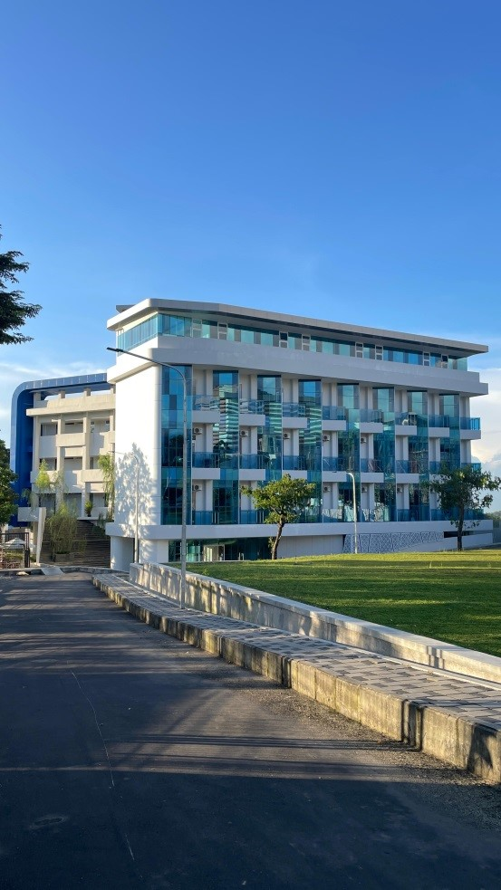
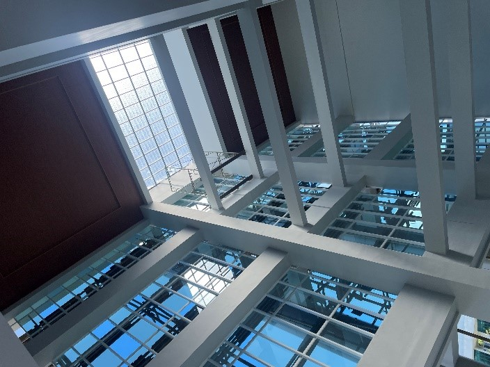
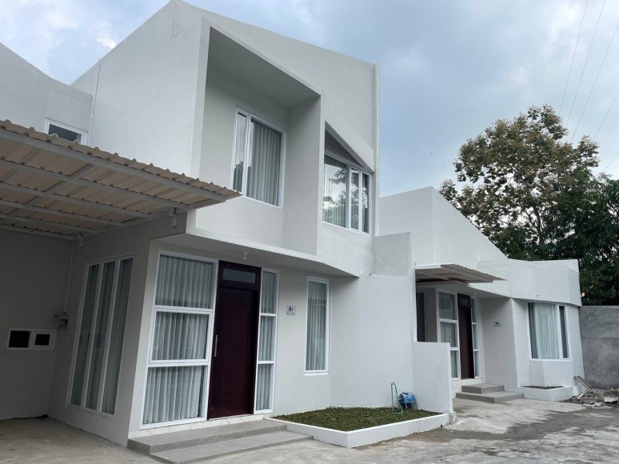
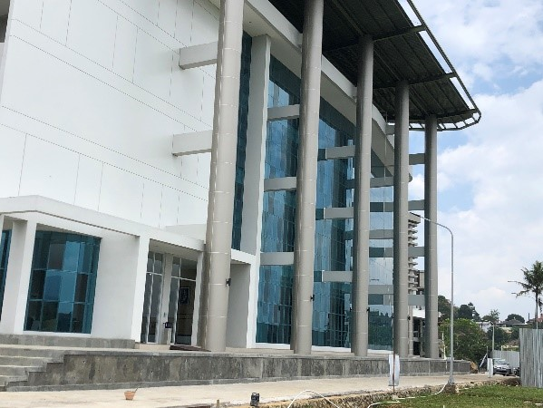
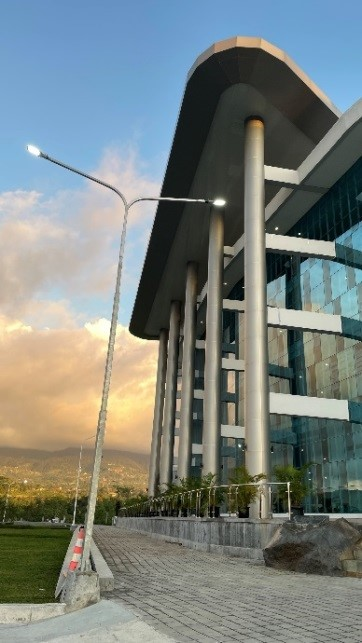
Pembangunan Fasilitas Umum Bendungan Jragung Milik BBWS Pemali Juana Mulai dari pembangunan Gedung, Mushola, Pengaspalan Jalan Hingga Ornamen Hiasan
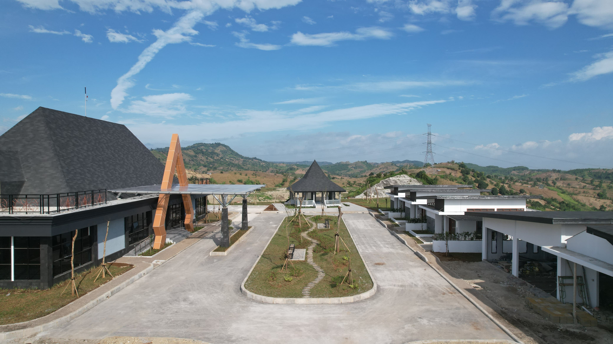
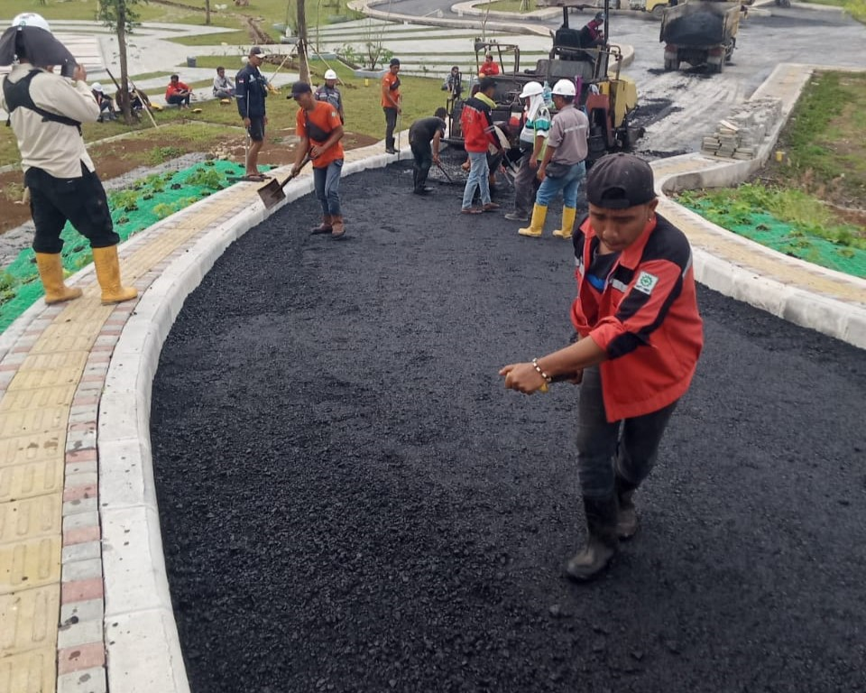
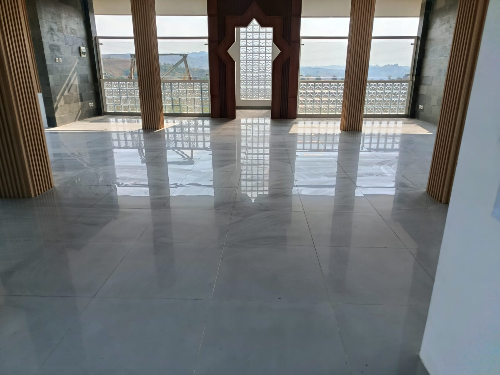
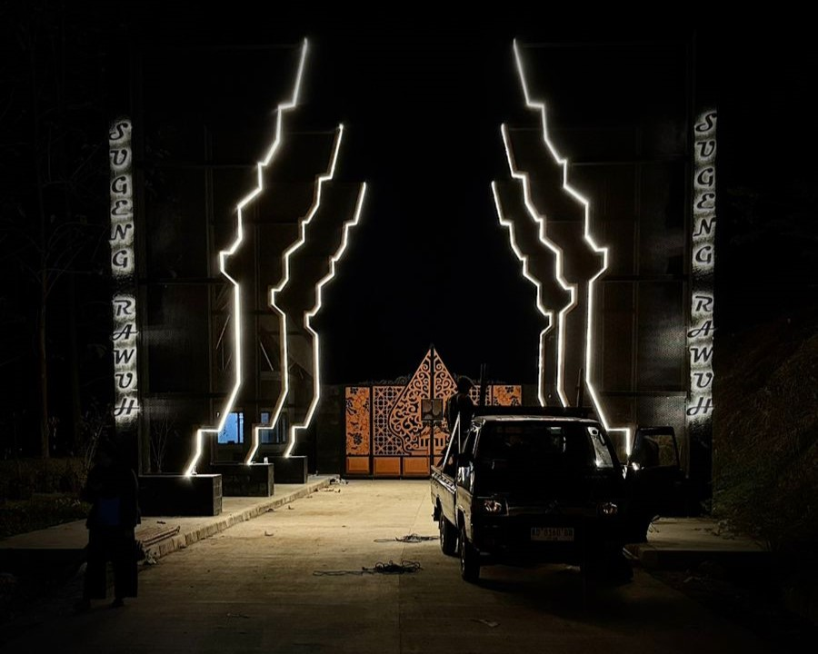
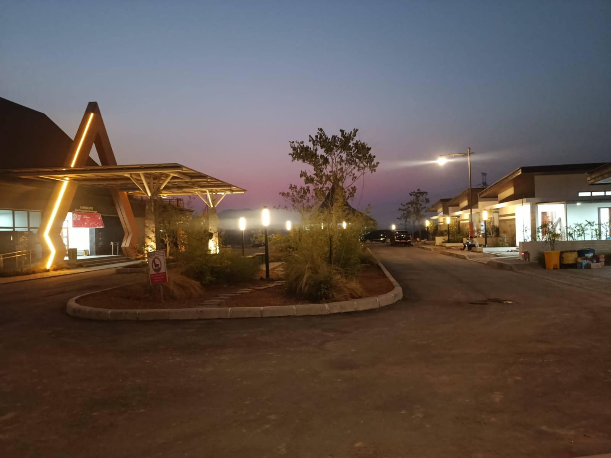
Rehabilitasi Perbaikan secara menyeluruh pada Bangunan Gedung D yang Sudah Tidak layak pada WS JratunSeluna
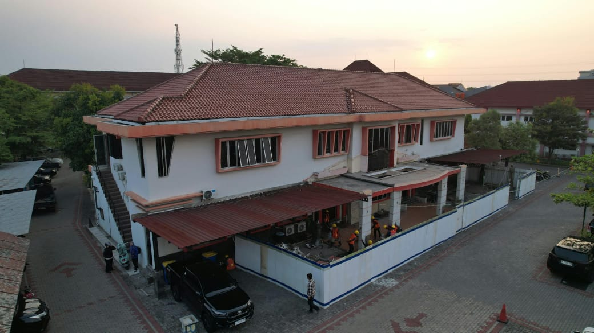
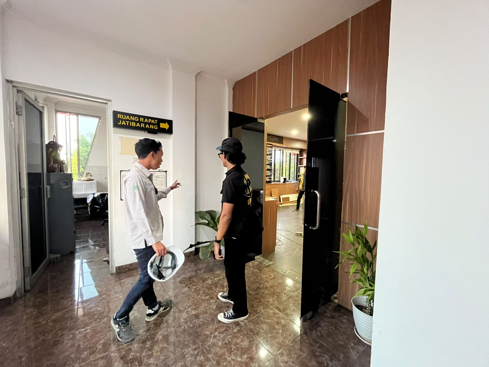
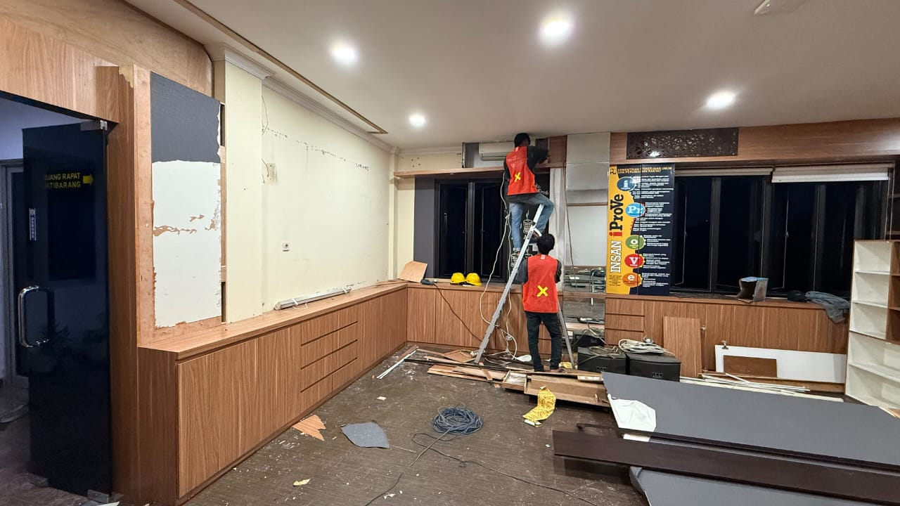
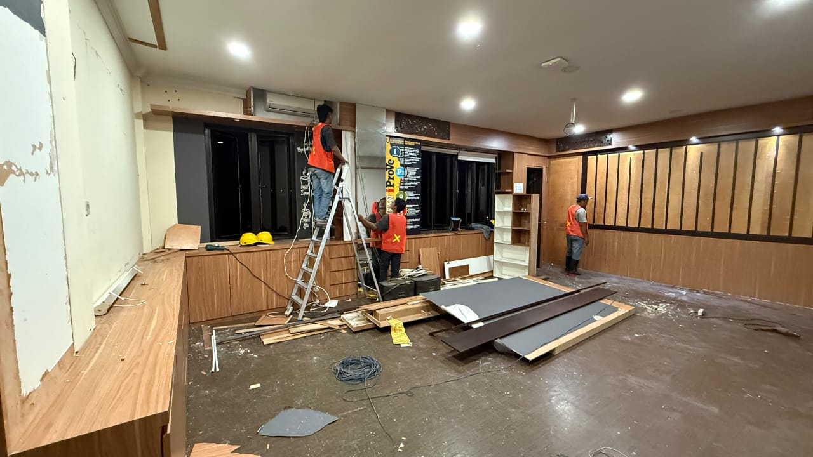
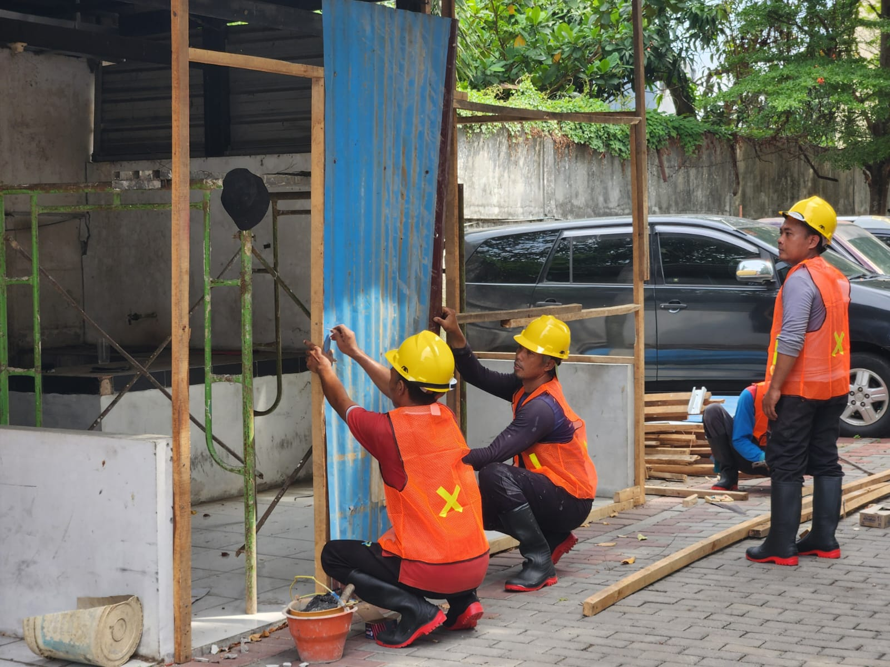
Diskusikan rencana anggaran dan spesifikasi teknis proyek Anda dengan tim insinyur berpengalaman PT Mumpuni.